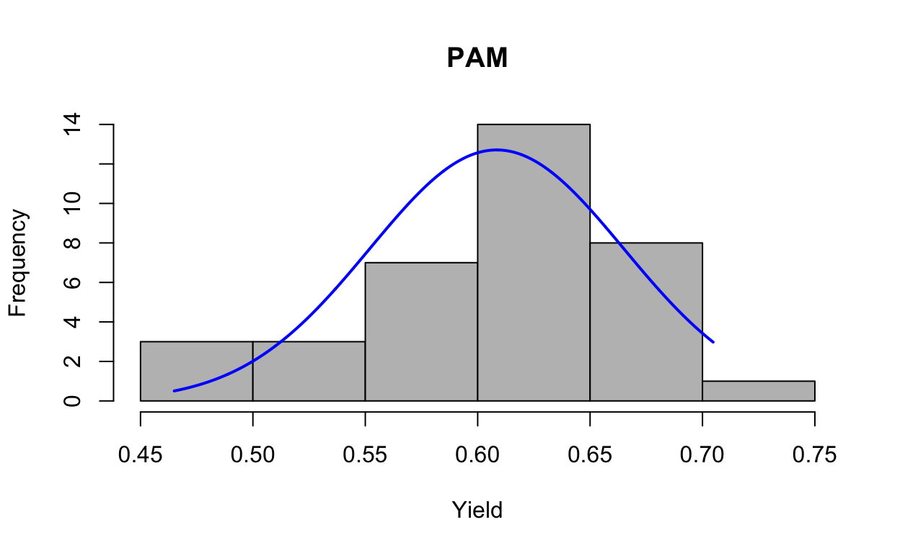
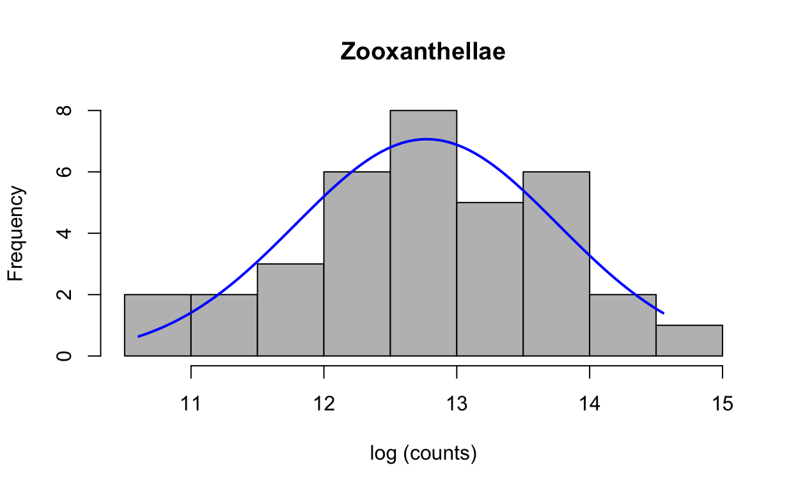

Table of Contents
Hypoxic Reef Conditions
Conditions characteristic of a hypoxic event were first detected on Sept. 20, 2017 in Bahia Almirante on the Caribbean coast of Panama. To evaluate the environmental conditions associated with the event we conducted a series of depth profiles with a YSI multiparameter sonde, measuring dissolved oxygen (DO), temperature, chlorophyll, salinity, and pH. Measurements were taken at 83 sites across Bahía Almirante on Sept. 25, 2017. We selected two focal sites across a gradient of DO concentrations, from extremely hypoxic to normoxic (ambient DO concentrations). Cayo Roldan (hypoxic site) lies at the inner reaches of Bahia Almirante where water exchange with the open ocean is restricted, experience extreme hypoxia on the benthos during the event. Cayo Coral (normoxic site) is well-flushed with open ocean water and was used as a control site because oxygenated conditions persisted during the event.
Coral Bleaching
The common lettuce coral, Agaricia tenuifolia, was collected from each site during the hypoxic event and evaluated for bleaching through measurements of symbiont densities, pigment content, and pulse amplitude modulated (PAM) fluorometry. Three fragments from each of six colonies were collected from each site and returned to the laboratory facilities at the Smithsonian Tropical Research Institute’s Bocas del Toro Research Station. Differences in each response variable were evaluated with a linear mixed effects model, with colony as a random effect and size as a fixed effect.
Coral Community Structure
The hypoxic and normoxic sites are the location of permanent benthic monitoring. We evaluated changes in benthic community structure from four months before, during, and one year after the hypoxic event using permanent photoquadrats. At each site, permanent quadrats were photographed every 5m along one 50m permanent transect, and community structure was determined from 50 randomly overlaid points using the online platform CoralNet. Taxa were identified to the finest resolution possible, and then grouped into different functional groups for subsequent analyses.
We used nonmetric multidimensional scaling (nMDS) to visually represent benthic community structure at each time point, and evaluated changes over time with a permutational analysis of variance (PERMANOVA), with pairwise contrasts. The benthic community did not change significantly over time at the normoxic site, so changes in the coral community over time were evaluated only at the hypoxic site.
Analysis Workflow
Next, we present the workflows we used to analyze coral response variables specifically the Pulse Amplitude Modulated (PAM) Fluorometry, Zooxanthellae, Chlorophyll a (Chla), and Chlorophyll C (Chlc) data. For each data set, we visually assess residuals, test for normality (Shapiro-Wilk Test), and test for equality of variances (Levene’s Test). In some cases, data are subsequently transformed.
data <- read.table("tables/field/coralhypoxia.csv",
header = T, sep = ",")
attach(data)
class(site)
[1] "character"
levels(site)
NULL
class(colony)
[1] "character"Pulse Amplitude Modulated (PAM) Fluorometry
First, we test all data for assumptions of normality and homogeneity of variances based on raw data (i.e., not transformed) and residuals. Data are normal, variances hetergeneous (transform doesn’t improve). Look at distribution of data with histogram.
Non-Transformed Data
Visual Assessment
plotNormalHistogram(yield)
First run the model to generate the residuals, then look at residuals to see if they are normally distributed; mixed model with fragment nested in colony, site as fixed effect.
lmepam <- lmer(yield ~ site + (1|colony),
REML = FALSE, na.action = na.exclude)
res1 <- resid(lmepam)Produce a histogram of the residuals.
hist(res1, main = "Yield", xlab = "Residuals")
plotNormalHistogram(res1)
Shapiro-Wilk Normality Test
pam.shapiro <- shapiro.test(res1) #runs a normality test on residuals
print(pam.shapiro) # null = normally distrubuted P<0.05 = non-normal
Shapiro-Wilk normality test
data: res1
W = 0.97021, p-value = 0.4312QQ plots of residuals from lme model
qqnorm(res1, ylab = "Sample Quantiles for PAM")
qqline(res1, col = "red")Levene’s Test
leveneTest(yield ~ as.factor(site), data = data)
Levene's Test for Homogeneity of Variance (center = median)
Df F value Pr(>F)
group 1 7.9824 0.00785 **
34
---
Signif. codes: 0 '***' 0.001 '**' 0.01 '*' 0.05 '.' 0.1 ' ' 1
bartlett.test(x = yield, g = site)
Bartlett test of homogeneity of variances
data: yield and site
Bartlett's K-squared = 6.3431, df = 1, p-value = 0.01178Data is normal but not homogenous—log transform does not improve.
Mixed Effects Models
Site is the fixed effect, colony is random, fragment is random nested in colony. Compared full model with fragment dropped. Best fit model (with lowest AIC) was the model with colony dropped. But using model that includes fragment because it’s necessary random effect.
When comparing models with different random effects like here—use REML = FALSE. But when not comparing use REML = TRUE (default). The full model includes site, colony, and fragment nested in colony. Colony/frag includes a term for colony alone and nests fragment in colony.
pam1 <- lmer(yield ~ site + (1|colony/frag), data = data,
REML = FALSE, na.action = na.exclude)
ranova(pam1)
ANOVA-like table for random-effects: Single term deletions
Model:
yield ~ site + (1 | frag:colony) + (1 | colony)
npar logLik AIC LRT Df Pr(>Chisq)
<none> 5 65.561 -121.12
(1 | frag:colony) 4 65.561 -123.12 0 1 1
(1 | colony) 4 65.561 -123.12 0 1 1Frag nested in colony dropped—I think colony accounts for fragment nested inherently?
pam2 <- lmer(yield ~ site + (1|colony), data = data,
REML = FALSE, na.action = na.exclude)
ranova(pam2)
ANOVA-like table for random-effects: Single term deletions
Model:
yield ~ site + (1 | colony)
npar logLik AIC LRT Df Pr(>Chisq)
<none> 4 65.561 -123.12
(1 | colony) 3 65.561 -125.12 -0.000000000000028422 1 1Use the full model to account for nesting fragments
mod.AIC <- AIC(pam1, pam2)
mod.AIC
df AIC
pam1 5 -121.1218
pam2 4 -123.1218Final models uses REML—not comparing models with different random effects.
finalpam <- lmer(yield ~ site + (1|colony),
data = data,
REML = TRUE, na.action = na.exclude)p values for random effects.
finalrandpam <- ranova(finalpam)
pam.table <- anova(finalpam, type = 2)
pam.table
Type II Analysis of Variance Table with Satterthwaite's method
Sum Sq Mean Sq NumDF DenDF F value Pr(>F)
site 0.056551 0.056551 1 34 34.827 0.000001156 ***
---
Signif. codes: 0 '***' 0.001 '**' 0.01 '*' 0.05 '.' 0.1 ' ' 1
finalrandpam
ANOVA-like table for random-effects: Single term deletions
Model:
yield ~ site + (1 | colony)
npar logLik AIC LRT Df Pr(>Chisq)
<none> 4 58.057 -108.11
(1 | colony) 3 58.057 -110.11 -0.000000000000014211 1 1Zooxanthellae
First testing all data for assumptions of normality and homogeneity of variances. Based on raw data and residuals, CR6B is an outlier and removed—log-transform data makes data normal and homogenous.
Non-Transformed Data
Visual Assessment
Look at distribution of the raw data with histogram.
attach(data)
plotNormalHistogram(zoox)
First run the model to generate the residuals, then look at residuals to see if normally distributed. Mixed model with fragment nested in colony, site as fixed effect. Yield is normally distributed, but variances not homogenous.
lmezoox <- lmer(zoox ~ site + (1|colony), REML = FALSE, na.action = na.exclude)
res2 <- resid(lmezoox)Produce a histogram of the residuals.
hist(res2, main = "Zoox", xlab = "Residuals")
plotNormalHistogram(res2)
Shapiro-Wilk Normality Test
zoox.shapiro <- shapiro.test(res2) #runs a normality test on residuals
print(zoox.shapiro) # null = normally distrubuted (P<0.05 = non-normal
Shapiro-Wilk normality test
data: res2
W = 0.9031, p-value = 0.004795QQ plots of residuals from lme model.
qqnorm(res2, ylab = "Sample Quantiles for Zoox")
qqline(res2, col = "red")
Levene’s Test
leveneTest(zoox~ as.factor(site),data = data) # p = 0.0007486
Levene's Test for Homogeneity of Variance (center = median)
Df F value Pr(>F)
group 1 13.805 0.0007486 ***
33
---
Signif. codes: 0 '***' 0.001 '**' 0.01 '*' 0.05 '.' 0.1 ' ' 1Transformed Data
Log transform improves normality—data are homogenous. Add a new column to dataframe for log transformation. Check that log transformed data is added as a new column.
data$zoox_log = log(zoox)
head(data)
site colony frag zoox chla chlc yield zoox_log
1 Coral One A 411086.2 2.597060 0.5928972 0.6503333 12.92656
2 Coral One B 199325.3 1.235098 0.4116325 0.6453333 12.20269
3 Coral One C 411812.2 2.620320 0.6300991 0.6513333 12.92832
4 Coral Two A 1089420.7 4.557184 1.1952204 0.6393333 13.90116
5 Coral Two B 353670.7 1.852745 0.6181671 0.6213333 12.77612
6 Coral Two C 891722.1 2.815479 0.7507814 0.6383333 13.70091
attach(data)Visual Assessment
Check normality of log-transformed data
plotNormalHistogram(zoox_log)
Check normality of log-transformed residuals
lmezoox_log <- lmer(zoox_log ~ site + (1|colony),
REML = FALSE,
na.action = na.exclude)
res3 <- resid(lmezoox_log)Produce a histogram of the residuals.
hist(res3, main = "zoox log", xlab = "Residuals")
plotNormalHistogram(res3)
Shapiro-Wilk Normality Test
zooxlog.shapiro <- shapiro.test(res3) #runs a normality test on residuals
print(zooxlog.shapiro) # null = normally distrubuted (P<0.05 = non-normal
Shapiro-Wilk normality test
data: res3
W = 0.96613, p-value = 0.3461QQ plots of residuals from lme model
qqnorm(res3, ylab = "Sample Quantiles for Zooxlog")
qqline(res3, col = "red")
Levene’s Test
leveneTest(zoox_log ~ as.factor(site), data = data) # p = 0.7968
Levene's Test for Homogeneity of Variance (center = median)
Df F value Pr(>F)
group 1 0.0674 0.7968
33 Mixed Effects Models
Site is fixed effect, colony is random, fragment is random nested in colony. Use log-transformed data. Ccolony/frag includes a term for colony alone and nests fragment in colony.
zoox1 <- lmer(zoox_log ~ site + (1|colony/frag),
data = data,
REML = FALSE,
na.action = na.exclude) #AIC 72.8756
ranova(zoox1)
ANOVA-like table for random-effects: Single term deletions
Model:
zoox_log ~ site + (1 | frag:colony) + (1 | colony)
npar logLik AIC LRT Df Pr(>Chisq)
<none> 5 -31.438 72.876
(1 | frag:colony) 4 -31.438 70.876 0.00000 1 1.0000
(1 | colony) 4 -31.584 71.167 0.29147 1 0.5893frag nested in colony dropped—I think colony accounts for fragment nested inherently?
zoox2 <- lmer(zoox_log ~ site + (1|colony),
data = data,
REML = FALSE,
na.action = na.exclude) #AIC 70.8756
ranova(zoox2)
ANOVA-like table for random-effects: Single term deletions
Model:
zoox_log ~ site + (1 | colony)
npar logLik AIC LRT Df Pr(>Chisq)
<none> 4 -31.438 70.876
(1 | colony) 3 -31.584 69.167 0.29147 1 0.5893
mod.AIC <- AIC(zoox1, zoox2)
mod.AIC ### use the full model to account for nesting fragments
df AIC
zoox1 5 72.8756
zoox2 4 70.8756Final models uses REML—not comparing models with different random effects.
finalzoox <- lmer(zoox_log ~ site + (1|colony),
data = data,
REML = TRUE,
na.action = na.exclude)P values for random effects
finalrandzoox <- ranova(finalzoox)
zoox.table <- anova(finalzoox, type = 2) #ANOVA table
zoox.table
Type II Analysis of Variance Table with Satterthwaite's method
Sum Sq Mean Sq NumDF DenDF F value Pr(>F)
site 20.468 20.468 1 27.954 59.465 0.00000002143 ***
---
Signif. codes: 0 '***' 0.001 '**' 0.01 '*' 0.05 '.' 0.1 ' ' 1
finalrandzoox
ANOVA-like table for random-effects: Single term deletions
Model:
zoox_log ~ site + (1 | colony)
npar logLik AIC LRT Df Pr(>Chisq)
<none> 4 -33.335 74.670
(1 | colony) 3 -33.611 73.223 0.55316 1 0.457Chlorophyll a (Chla)
First testing all data for assumptions of normality and homogeneity of variances. Based on raw data and residuals
Non-Transformed Data
Visual Assessment
Look at distribution of the raw data with histogram.
plotNormalHistogram(chla)
First run the model to generate the residuals, then look at residuals to see if normally distributed. Mixed model with fragment nested in colony, site as fixed effect. Raw data are normal but variances not homogenous—log-transformed improves homogeneity.
lmechla <- lmer(chla ~ site + (1|colony),
REML = FALSE,
na.action = na.exclude)
res4 <- resid(lmechla)Produce a histogram of the residuals.
hist(res4, main = "Chla", xlab = "Residuals")
plotNormalHistogram(res4)
Shapiro-Wilk Normality Test
chla.shapiro <- shapiro.test(res4)
print(chla.shapiro)
Shapiro-Wilk normality test
data: res4
W = 0.96483, p-value = 0.3015QQ plots of residuals from lme model
qqnorm(res4, ylab = "Sample Quantiles for Zoox")
qqline(res4, col = "red")
Levene’s Test
leveneTest(chla ~ as.factor(site), data = data) # p = 0.01606
Levene's Test for Homogeneity of Variance (center = median)
Df F value Pr(>F)
group 1 6.4203 0.01606 *
34
---
Signif. codes: 0 '***' 0.001 '**' 0.01 '*' 0.05 '.' 0.1 ' ' 1Data are normal but variances are not homogenous.
Transformed Data
Add a new column to dataframe for log transformation.
data$chla_log = log(chla)Check that log transformed data is added as a new column
head(data)
site colony frag zoox chla chlc yield zoox_log
1 Coral One A 411086.2 2.597060 0.5928972 0.6503333 12.92656
2 Coral One B 199325.3 1.235098 0.4116325 0.6453333 12.20269
3 Coral One C 411812.2 2.620320 0.6300991 0.6513333 12.92832
4 Coral Two A 1089420.7 4.557184 1.1952204 0.6393333 13.90116
5 Coral Two B 353670.7 1.852745 0.6181671 0.6213333 12.77612
6 Coral Two C 891722.1 2.815479 0.7507814 0.6383333 13.70091
chla_log
1 0.9543802
2 0.2111501
3 0.9632964
4 1.5167048
5 0.6166685
6 1.0351322
attach(data)Visual Assessment
Check normality of log-transformed data.
plotNormalHistogram(chla_log)
Check normality of log-transformed residuals.
lmechla_log <- lmer(chla_log ~ site + (1|colony),
REML = FALSE,
na.action = na.exclude)
res7 <- resid(lmechla_log)Produce a histogram of the residuals.
hist(res7, main = "chla log", xlab = "Residuals")
plotNormalHistogram(res7)
Shapiro-Wilk Normality Test
chlalog.shapiro <- shapiro.test(res7) #runs a normality test on residuals
print(chlalog.shapiro) # null = normally distrubuted (P<0.05 = non-normal
Shapiro-Wilk normality test
data: res7
W = 0.95611, p-value = 0.1627QQ plots of residuals from lme model
qqnorm(res7, ylab = "Sample Quantiles for chlalog")
qqline(res7, col = "red")Levene’s Test
leveneTest(chla_log ~ as.factor(site), data = data) # p = 0.7487
Levene's Test for Homogeneity of Variance (center = median)
Df F value Pr(>F)
group 1 0.1043 0.7487
34 Mixed Model Effects
Site is fixed effect, colony is random, fragment is random nested in colony on log transformed data. Colony/frag includes a term for colony alone and nests fragment in colony.
chla_log1 <- lmer(chla_log ~ site+(1|colony/frag),
data = data,
REML = FALSE,
na.action = na.exclude) #AIC 55.11567
ranova(chla_log1)
ANOVA-like table for random-effects: Single term deletions
Model:
chla_log ~ site + (1 | frag:colony) + (1 | colony)
npar logLik AIC LRT Df Pr(>Chisq)
<none> 5 -22.558 55.116
(1 | frag:colony) 4 -22.558 53.116 0.0000 1 1.0000
(1 | colony) 4 -23.274 54.549 1.4333 1 0.2312Frag nested in colony dropped—I think colony accounts for fragment nested inherently?
chla_log2 <- lmer(chla_log ~ site + (1|colony),
data = data,
REML = FALSE,
na.action = na.exclude) #AIC 53.11567
ranova(chla_log2)
ANOVA-like table for random-effects: Single term deletions
Model:
chla_log ~ site + (1 | colony)
npar logLik AIC LRT Df Pr(>Chisq)
<none> 4 -22.558 53.116
(1 | colony) 3 -23.274 52.549 1.4333 1 0.2312
mod.AIC <- AIC(chla_log1, chla_log2)
mod.AIC ### use the full model to account for nesting fragments
df AIC
chla_log1 5 55.11567
chla_log2 4 53.11567Final models uses REML—not comparing models with different random effects.
finalchla_log <- lmer(chla_log ~ site + (1|colony),
data = data,
REML = TRUE,
na.action = na.exclude)p values for random effects.
finalchla_logrand <- ranova(finalchla_log)
chla_log.table <- anova(finalchla_log, type = 2) #ANOVA table
chla_log.table
Type II Analysis of Variance Table with Satterthwaite's method
Sum Sq Mean Sq NumDF DenDF F value Pr(>F)
site 7.508 7.508 1 29 39.802 0.0000006851 ***
---
Signif. codes: 0 '***' 0.001 '**' 0.01 '*' 0.05 '.' 0.1 ' ' 1
finalchla_logrand
ANOVA-like table for random-effects: Single term deletions
Model:
chla_log ~ site + (1 | colony)
npar logLik AIC LRT Df Pr(>Chisq)
<none> 4 -24.908 57.816
(1 | colony) 3 -25.843 57.687 1.871 1 0.1714Chlorophyll c (Chlc)
First testing all data for assumptions of normality and homogeneity of variances. Based on raw data and residuals. Data need to be log transformed for normality and variances
Non-Transformed Data
Visual Assessment
Look at distribution of the raw data with histogram.
plotNormalHistogram(chlc)
First run the model to generate the residuals then look at residuals to see if normally distributed mixed model with fragment nested in colony, site as fixed effect yield is normally distributed, but variances not homogenous
lmechlc <- lmer(chlc ~ site + (1|colony),
REML = FALSE,
na.action = na.exclude)
res5 <- resid(lmechlc)Produce a histogram of the residuals.
hist(res5,main = "chlc", xlab = "Residuals")
plotNormalHistogram(res5)
Shapiro-Wilk Normality Test
chlc.shapiro <- shapiro.test(res5)
print(chlc.shapiro)
Shapiro-Wilk normality test
data: res5
W = 0.90427, p-value = 0.004475QQ plots of residuals from lme model
qqnorm(res5, ylab = "Sample Quantiles for Zoox")
qqline(res5, col = "red")Levene’s Test
leveneTest(chlc ~ as.factor(site), data = data) # p = 0.01316
Levene's Test for Homogeneity of Variance (center = median)
Df F value Pr(>F)
group 1 6.8454 0.01316 *
34
---
Signif. codes: 0 '***' 0.001 '**' 0.01 '*' 0.05 '.' 0.1 ' ' 1Data not normally distributed or homogenous
Transformed Data
Log transform improves normality and homogeneity. Add a new column to dataframe for log transformation. Check that log transformed data is added as a new column
data$chlc_log = log(chlc)
head(data)
site colony frag zoox chla chlc yield zoox_log
1 Coral One A 411086.2 2.597060 0.5928972 0.6503333 12.92656
2 Coral One B 199325.3 1.235098 0.4116325 0.6453333 12.20269
3 Coral One C 411812.2 2.620320 0.6300991 0.6513333 12.92832
4 Coral Two A 1089420.7 4.557184 1.1952204 0.6393333 13.90116
5 Coral Two B 353670.7 1.852745 0.6181671 0.6213333 12.77612
6 Coral Two C 891722.1 2.815479 0.7507814 0.6383333 13.70091
chla_log chlc_log
1 0.9543802 -0.5227343
2 0.2111501 -0.8876244
3 0.9632964 -0.4618782
4 1.5167048 0.1783306
5 0.6166685 -0.4809965
6 1.0351322 -0.2866407
attach(data)Visual Assessment
Check normality of log-transformed data
plotNormalHistogram(chlc_log)
Check normality of log-transformed residuals
lmechlc_log <- lmer(chlc_log ~ site + (1|colony),
REML = FALSE,
na.action = na.exclude)
res6 <- resid(lmechlc_log)Produce a histogram of the residuals.
hist(res6, main = "chlc log",xlab = "Residuals")
plotNormalHistogram(res6)
Shapiro-Wilk Normality Test
chlclog.shapiro <- shapiro.test(res6)
print(chlclog.shapiro)
Shapiro-Wilk normality test
data: res6
W = 0.98465, p-value = 0.8874QQ plots of residuals from lme model
qqnorm(res6, ylab = "Sample Quantiles for chlclog")
qqline(res6, col = "red")Levene’s Test
leveneTest(chlc_log ~ as.factor(site), data = data) # p = 0.884
Levene's Test for Homogeneity of Variance (center = median)
Df F value Pr(>F)
group 1 0.0216 0.884
34 Mixed Model Effects
Site is fixed effect, colony is random, fragment is random nested in colony. On log-transformed data. Colony/frag includes a term for colony alone and nests fragment in colony.
chlc_log1 <- lmer(chlc_log ~ site + (1|colony/frag),
data = data,
REML = FALSE,
na.action = na.exclude) #AIC 64.52399
ranova(chlc_log1)
ANOVA-like table for random-effects: Single term deletions
Model:
chlc_log ~ site + (1 | frag:colony) + (1 | colony)
npar logLik AIC LRT Df Pr(>Chisq)
<none> 5 -27.262 64.524
(1 | frag:colony) 4 -27.262 62.524 0.0000 1 1.0000
(1 | colony) 4 -27.833 63.665 1.1412 1 0.2854frag nested in colony dropped- I think colony accounts for fragment nested inherently?
chlc_log2 <- lmer(chlc_log ~ site+(1|colony),
data = data,
REML = FALSE,
na.action = na.exclude) #AIC 62.52399
ranova(chlc_log2)
ANOVA-like table for random-effects: Single term deletions
Model:
chlc_log ~ site + (1 | colony)
npar logLik AIC LRT Df Pr(>Chisq)
<none> 4 -27.262 62.524
(1 | colony) 3 -27.833 61.665 1.1412 1 0.2854
mod.AIC <- AIC(chlc_log1, chlc_log2)
mod.AIC ### use the full model to account for nesting fragments
df AIC
chlc_log1 5 64.52399
chlc_log2 4 62.52399Final models uses REML- not comparing models with different random effects
finalchlc_log <- lmer(chlc_log ~ site + (1|colony),
data = data,
REML = TRUE,
na.action = na.exclude)p values for random effects
finalchlc_logrand <- ranova(finalchlc_log)
chlc_log.table <- anova(finalchlc_log, type = 2) #ANOVA table
chlc_log.table
Type II Analysis of Variance Table with Satterthwaite's method
Sum Sq Mean Sq NumDF DenDF F value Pr(>F)
site 6.1918 6.1918 1 29 24.977 0.00002553 ***
---
Signif. codes: 0 '***' 0.001 '**' 0.01 '*' 0.05 '.' 0.1 ' ' 1
finalchlc_logrand
ANOVA-like table for random-effects: Single term deletions
Model:
chlc_log ~ site + (1 | colony)
npar logLik AIC LRT Df Pr(>Chisq)
<none> 4 -29.375 66.749
(1 | colony) 3 -30.148 66.297 1.5476 1 0.2135Figures
all <- read.table("tables/field/coralhypoxia.csv", header = T, sep = ",")
attach(all)
ggplot(all,aes(x=site, y=yield))+ #group tells line what to connect
geom_boxplot()+ #make box
labs(x="Site",y='Maximum Quantum Yield')+
theme_classic()+ #makes look normal
#scale_fill_manual(values = c("steelblue","darkred"))+
theme(text = element_text(size=14))+ #change text size
theme(axis.text.x = element_text(colour="black", angle=0, hjust=1), #make all text black ## to put x axis label at angle: angle=45, hjust=1),
axis.text.y = element_text(colour="black"))+
scale_y_continuous(expand = c(0,0),
limits = c(0.4,0.75)) #set y axis
ggplot(all,aes(x=site, y=yield, color=colony))+ #colors the dots by colony
geom_point(size=3)+
labs(x="Site",y='Maximum Quantum Yield')+
theme_classic()+ #makes look normal
#scale_fill_manual(values = c("steelblue","darkred"))+
theme(text = element_text(size=14))+ #change text size
theme(axis.text.x = element_text(colour="black", angle=0, hjust=1), #make all text black ## to put x axis label at angle: angle=45, hjust=1),
axis.text.y = element_text(colour="black"))+
scale_y_continuous(expand = c(0,0),
limits = c(0.4,0.75)) #set y axisCalculate Means for Figures
means.all<-ddply(all,c("site","colony"),summarise,
N = sum(!is.na(yield)),
yield_mean = mean(yield, na.rm=TRUE),
zoox_mean = mean(zoox, na.rm=TRUE),
chla_mean = mean(chla, na.rm=TRUE),
chlc_mean = mean(chlc, na.rm=TRUE),
sd_yield = sd(yield),
sd_zoox = sd(zoox),
sd_chla = sd(chla),
sd_chlc = sd(chlc),
yield_se = (sd(yield)/sqrt(N)),
zoox_se = (sd(zoox)/sqrt(N)),
chla_se = (sd(chla)/sqrt(N)),
chlc_se = (sd(chlc)/sqrt(N)))
head(means.all)
site colony N yield_mean zoox_mean chla_mean chlc_mean sd_yield
1 Coral Five 3 0.6531111 713619.3 3.495386 1.1783720 0.01266813
2 Coral Four 3 0.6695556 741780.0 5.199911 1.9368219 0.01281203
3 Coral One 3 0.6490000 340741.2 2.150826 0.5448762 0.00321455
4 Coral Six 3 0.6153333 1360692.9 6.017438 1.9504259 0.02088327
5 Coral Three 3 0.6686944 1295987.7 3.830870 1.1553710 0.04261458
6 Coral Two 3 0.6330000 778271.2 3.075136 0.8547230 0.01011599
sd_zoox sd_chla sd_chlc yield_se zoox_se chla_se
1 192640.8 0.8182351 0.3588934 0.007313947 111221.23 0.4724083
2 221822.6 1.3905156 0.6624581 0.007397030 128069.35 0.8028146
3 122470.3 0.7931292 0.1168821 0.001855921 70708.27 0.4579133
4 418268.7 1.9781461 0.8402899 0.012056964 241487.56 1.1420832
5 734473.8 0.4410107 0.4475100 0.024603538 424048.67 0.2546176
6 380769.4 1.3707892 0.3022425 0.005840472 219837.32 0.7914255
chlc_se
1 0.2072072
2 0.3824703
3 0.0674819
4 0.4851416
5 0.2583700
6 0.1744998
write.csv(means.all, file = "tables/field/allcoralmeans.csv", row.names=FALSE)Colony Means
ggplot(means.all,aes(x=site, y=yield_mean,fill=site)) +
geom_boxplot() +
labs(x = "Site", y = 'Maximum Quantum Yield') +
theme_classic()+ #makes look normal
scale_fill_manual(values = c("steelblue","darkred"))+
theme(text = element_text(size=14))+ #change text size
theme(axis.text.x = element_text(colour="black", angle=0, hjust=1),
axis.text.y = element_text(colour="black"))+
scale_y_continuous(expand = c(0,0),
limits = c(0.4,0.75)) #set y axisset a jitter object to offset points and assign data to ggplot
jitter <- position_jitter(width = 0.1)
yield_plot <- ggplot(means.all, aes(x = site, y = yield_mean))make it the kind of plot you want- this makes a box plot colored by site, then overlays a scatterplot of all the data (in this case the colony means) Close to publication quality :)
Maximum Quantum Yield by site with colony means
yp <- yield_plot+
geom_boxplot(color="black",
aes(fill=site),
width=0.4)+
scale_fill_manual(values=c("skyblue3","coral3"), name= NULL, labels=c("Normoxic","Hypoxic"))+
geom_point(size=2, position=jitter)+ #aes(color=colony))+
labs(x="Site",y="Maximum Quantum Yield")+
theme_classic()+
theme(legend.position = c(0.85,0.85),
legend.title= element_text(color="transparent"),
axis.text.x = element_text(colour="black"), #make all text black ## to put x axis label at angle: angle=45, hjust=1),
axis.text.y = element_text(colour="black"),
axis.title.y = element_text(margin = margin(t=0, r=10,b=0,l=0)),
panel.border = element_rect(colour = "black", fill=NA, size=.5))+
# modifies the legend titletheme(text = element_text(size=14), panel.background = element_rect(fill = "transparent"))+ # bg of the panel
theme(text = element_text(size=12))+
scale_x_discrete(labels=c("Coral" = "Coral Cay","Roldan" = "Cayo Roldan"))+
scale_y_continuous(expand = c(0,0), limits = c(0.5,0.7))Zooxanthellae Counts by site with colony means
assign data to ggplot
yield_zoox <- ggplot(means.all, aes(x=site, y=zoox_mean))
zp <- yield_zoox+
geom_boxplot(color="black",
aes(fill=site),
width=0.4)+
scale_fill_manual(values=c("skyblue3","coral3"), name= NULL, labels=c("Normoxic","Hypoxic"))+
geom_point(size=2, position=jitter)+ #aes(color=colony))+
labs(x="Site",
y=("Endosymbiont Density (cells cm^-2)"))+
theme_classic()+
theme(legend.position = "none", #
#c(0.8,0.875),
#legend.title= element_text(color="transparent"),
axis.text.x = element_text(colour="black"), #make all text black ## to put x axis label at angle: angle=45, hjust=1),
axis.text.y = element_text(colour="black"),
axis.title.y = element_text(margin = margin(t=0, r=10,b=0,l=0)),
panel.border = element_rect(colour = "black", fill=NA, size=.5))+
# modifies the legend titletheme(text = element_text(size=14), panel.background = element_rect(fill = "transparent"))+ # bg of the panel
theme(text = element_text(size=12))+
scale_x_discrete(labels=c("Coral" = "Coral Cay","Roldan" = "Cayo Roldan"))+
scale_y_continuous(labels = scientific,
breaks=seq(0,1.5E6, 4.5E5),
expand = c(0,0),
limits = c(0,1.5E6))
zp 
Pigment Data
Convert Pigment data to long format with Chla and Chlc Stacked, so can put in same figures
pigs <- tidyr::gather(means.all, pigment, concentration,chla_mean, chlc_mean)
head(pigs)
site colony N yield_mean zoox_mean sd_yield sd_zoox sd_chla
1 Coral Five 3 0.6531111 713619.3 0.01266813 192640.8 0.8182351
2 Coral Four 3 0.6695556 741780.0 0.01281203 221822.6 1.3905156
3 Coral One 3 0.6490000 340741.2 0.00321455 122470.3 0.7931292
4 Coral Six 3 0.6153333 1360692.9 0.02088327 418268.7 1.9781461
5 Coral Three 3 0.6686944 1295987.7 0.04261458 734473.8 0.4410107
6 Coral Two 3 0.6330000 778271.2 0.01011599 380769.4 1.3707892
sd_chlc yield_se zoox_se chla_se chlc_se pigment
1 0.3588934 0.007313947 111221.23 0.4724083 0.2072072 chla_mean
2 0.6624581 0.007397030 128069.35 0.8028146 0.3824703 chla_mean
3 0.1168821 0.001855921 70708.27 0.4579133 0.0674819 chla_mean
4 0.8402899 0.012056964 241487.56 1.1420832 0.4851416 chla_mean
5 0.4475100 0.024603538 424048.67 0.2546176 0.2583700 chla_mean
6 0.3022425 0.005840472 219837.32 0.7914255 0.1744998 chla_mean
concentration
1 3.495386
2 5.199911
3 2.150826
4 6.017438
5 3.830870
6 3.075136
pigments <- dplyr::select(pigs,site,colony,pigment,concentration)
head(pigments)
site colony pigment concentration
1 Coral Five chla_mean 3.495386
2 Coral Four chla_mean 5.199911
3 Coral One chla_mean 2.150826
4 Coral Six chla_mean 6.017438
5 Coral Three chla_mean 3.830870
6 Coral Two chla_mean 3.075136assign data to ggplot data frame “pigments”
pig_plot <- ggplot(pigments,
aes(x=pigment, y=concentration, fill=site))Shows chl a and chl c on the x axis with site color coded
pig_plot+
geom_boxplot(color="black")+
scale_fill_manual(values=c("skyblue3","coral3"), name= NULL, labels=c("Normoxic","Hypoxic"))Chlorophyll a (Chla) Plots only
assign data to ggplot set a jitter object to offset points
jitter2 <- position_jitter(width=0.05)
chla_plot <- ggplot(means.all,
aes(x=site, y=chla_mean))
cp <- chla_plot+
geom_boxplot(color="black",
aes(fill=site),
width=0.4)+
scale_fill_manual(values=c("skyblue3","coral3"), name= NULL, labels=c("Normoxic","Hypoxic"))+
geom_point(size=2, position=jitter)+ #aes(color=colony))+
labs(x="Site",
y=("Chl a Concentration (ug cm^-2)"))+
theme_classic()+
theme(legend.position = "none",
#c(0.8,0.875),
#legend.title= element_text(color="transparent"),
axis.text.x = element_text(colour="black"), #make all text black ## to put x axis label at angle: angle=45, hjust=1),
axis.text.y = element_text(colour="black"),
axis.title.y = element_text(margin = margin(t=0, r=10,b=0,l=0)),
panel.border = element_rect(colour = "black", fill=NA, size=.5))+
# modifies the legend titletheme(text = element_text(size=14), panel.background = element_rect(fill = "transparent"))+ # bg of the panel
theme(text = element_text(size=12))+
scale_x_discrete(labels=c("Coral" = "Coral Cay","Roldan" = "Cayo Roldan"))+
scale_y_continuous(expand = c(0,0),
limits = c(0,6))Fine tuning figures for the panel plot
Maximum Quantum Yield by site with colony means
ypp <- yield_plot +
geom_boxplot(color = "black", aes(fill = site), width = 0.4) +
scale_fill_manual(values = c("skyblue3", "coral3"), name = NULL,
labels = c("Normoxic", "Hypoxic")) +
geom_point(size = 1, position = jitter) + #aes(color=colony))+
labs(x = "Site", y = ("Maximum Quantum Yield")) +
theme_classic() +
theme(legend.position = "top", legend.direction = "vertical", #
legend.title= element_text(color = "transparent"),
#axis.text.x = element_blank(),
axis.text.x = element_text(size = 7, colour="black"),
axis.text.y = element_text(size = 8, colour = "black"),
axis.title.x = element_blank(),
axis.title.y = element_text(size = 9, margin = margin(t = 0, r = 10, b = 0, l = 0)),
panel.border = element_rect(colour = "black", fill = NA, size = 0.5)) +
theme(text = element_text(size = 12)) +
scale_x_discrete(labels=c("Coral" = "Coral Cay", "Roldan" = "Cayo Roldan")) +
scale_y_continuous(expand = c(0,0), limits = c(0.5,0.7))Zooxanthellae Counts by site with colony means
yzield_zoox <- ggplot(means.all, aes(x = site, y = zoox_mean))
zpp <- yield_zoox+
geom_boxplot(color="black",
aes(fill=site),
width=0.4)+
scale_fill_manual(values=c("skyblue3","coral3"), name= NULL, labels=c("Normoxic","Hypoxic"))+
geom_point(size=1, position=jitter)+ #aes(color=colony))+
labs(x = "Site", y=("Endosymbiont Density (cells cm^-2)"))+
theme_classic() +
theme(legend.position = "none", #
#c(0.8,0.875),
#legend.title= element_text(color="transparent"),
axis.text.x = element_text(size = 7, colour="black"),
axis.title.x = element_text(size = 12),
#axis.title.x = element_blank(),
#axis.text.x = element_blank(),
axis.text.y = element_text(size = 8, colour="black"),
axis.title.y = element_text(size = 9, margin = margin(t=0, r=10,b=0,l=0)),
panel.border = element_rect(colour = "black", fill=NA, size=.5)) +
theme(text = element_text(size=12))+
scale_x_discrete(labels=c("Coral" = "Coral Cay","Roldan" = "Cayo Roldan"))+
scale_y_continuous(labels = scientific,
breaks=seq(0,1.5E6, 4.5E5),
expand = c(0,0),
limits = c(0,1.5E6))Chlorophyll a (Chla)
chla_plot <- ggplot(means.all, aes(x = site, y = chla_mean))
cpp <- chla_plot +
geom_boxplot(color="black", aes(fill=site), width=0.4)+
scale_fill_manual(values = c("skyblue3","coral3"),
name = NULL, labels = c("Normoxic", "Hypoxic")) +
geom_point(size=1, position=jitter) +
labs(x = "Site", y = ("Chl a Concentration (ug cm^-2)")) +
theme_classic() +
theme(legend.position = "none",
#legend.title= element_text(color="transparent"),
axis.text.x = element_text(size = 7, colour="black"),
axis.text.y = element_text(size = 8, colour="black"),
axis.title.y = element_text(size = 9, margin = margin(t = 0, r = 10, b = 0, l = 0)),
axis.title.x = element_blank(),
#axis.title.x = element_text(size = 12),
panel.border = element_rect(colour = "black", fill=NA, size=.5)) +
theme(text = element_text(size=12))+
scale_x_discrete(labels=c("Coral" = "Coral Cay","Roldan" = "Cayo Roldan"))+
scale_y_continuous(expand = c(0,0),
limits = c(0,6))
Source Code
The source code for this page can be accessed on GitHub by clicking this link.